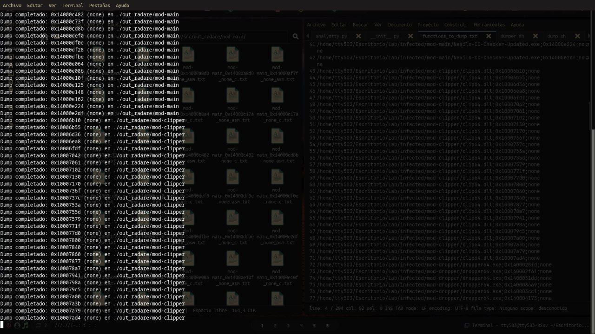
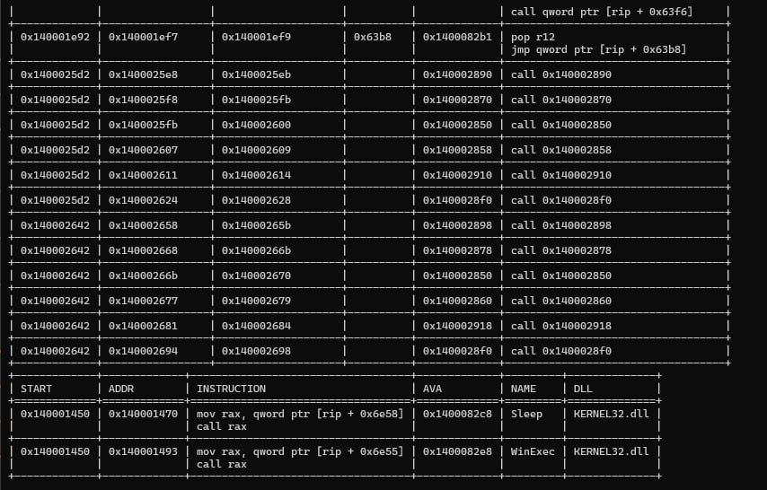
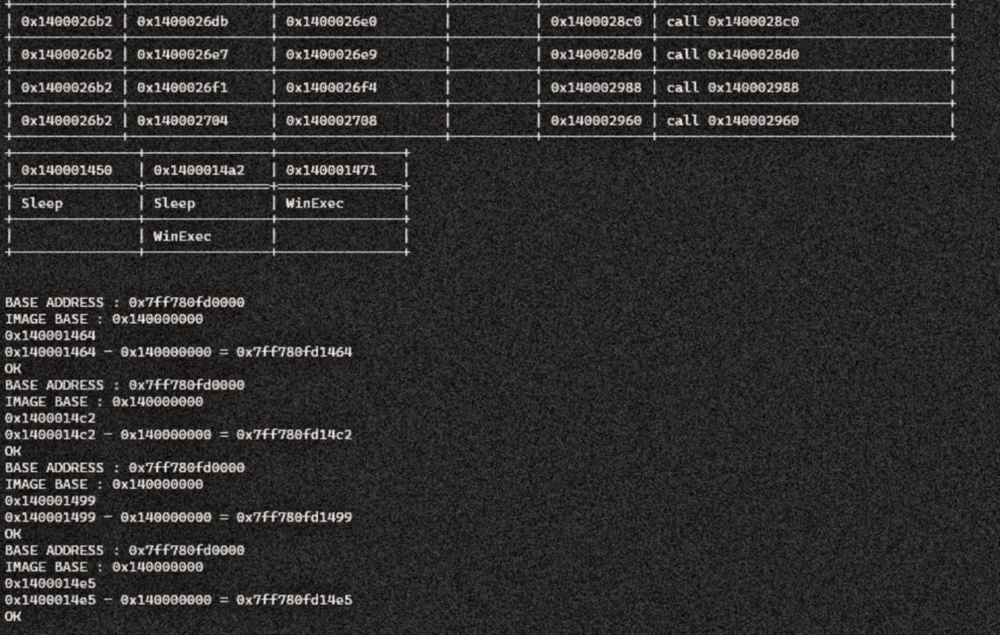

analystty: triage automatizado de malware PE con Python
Herramienta que extrae imports, detecta TTPs con MITRE ATT&CK, desensambla la sección .text y genera breakpoints para x64dbg automáticamente. Stack: Capstone, pefile, malapi.json. Caso real: un dropper con API hashing.
/analystty · 11 secciones
- Resumen Técnico
- La motivación: automatizar lo mecánico
- Arquitectura interna y dependencias
- El pipeline: del binario al breakpoint
- TTPs con MITRE ATT&CK desde los imports
- Correlación: del import al call graph
- ASLR y breakpoints automáticos en x64dbg
- Caso real: el dropper multi-etapa con API hashing
- Limitaciones honestas y roadmap
- Conclusión: la navaja suiza personal
- Referencias
01. Resumen Técnico
| Herramienta | analystty — triage automatizado de ejecutables PE en Python puro |
|---|---|
| Origen | Proyecto personal iniciado en octubre de 2024 |
| Componentes | frm_pe (análisis estático) y medbg (interfaz de depuración) |
| Dependencias | pefile, Capstone, bindings de x64dbg, tabulate |
| Inteligencia | malapi.json: APIs maliciosas categorizadas y cruzadas con tácticas MITRE ATT&CK |
| Salida | Correlación función↔API sospechosa + script de breakpoints para x64dbg |
| Caso validado | Dropper multi-etapa con API Hashing (noviembre de 2025): Clipper e InfoStealer identificados tras volcado con Radare2 |
Así se ve una corrida completa sobre la muestra del caso real de la sección 07:
$ analystty --target dropper_nexilo.exe
[+] PE cargado: dropper_nexilo.exe (x86_64)
[+] Imports extraídos: 47 APIs en 5 DLLs
[!] TTPs detectadas: Evasión (TA0005), Inyección (TA0004), Ejecución (TA0002)
[+] Sección .text desensamblada: 1,247 instrucciones desde Entry Point
[+] Correlación completada: 8 funciones mapeadas a APIs sospechosas
[+] Breakpoints generados para x64dbg: 4 breakpoints en direcciones críticas
[+] Script exportado: analystty_dropper_nexilo.txt02. La motivación: automatizar lo mecánico
Todo análisis de malware arranca igual: cargar el binario, extraer la tabla de importaciones, ojear las APIs una por una, averiguar qué función las invoca y preparar el entorno dinámico. Es trabajo necesario pero profundamente repetitivo — y la repetición es mi señal inequívoca de que toca automatizar. De ahí nació analystty en octubre de 2024, como proyecto práctico y personal.
No pretendía reinventar IDA Python ni el scripting de Ghidra. La ambición era más modesta y más útil: una herramienta ligera en Python puro capaz de tragarse un PE sospechoso y devolverme en segundos un mapa nítido de sus capacidades maliciosas.
Más que innovar, analystty consolida conocimiento y elimina fricción: es el puente entre lo estático (estructura PE, desensamblado) y lo dinámico (depuración con x64dbg). Su bautismo de fuego llegó con el dropper multi-etapa de la Threat Hunter Recollection, analizado exactamente con este pipeline.
03. Arquitectura interna y dependencias
Todo el peso recae sobre dos clases que gobiernan src/analystty.py, cada una dueña de una mitad del problema:
| Componente | Rol |
|---|---|
frm_pe | Motor de análisis estático: parseo de headers, secciones e imports; desensamblado con Capstone y detección heurística de funciones. |
medbg | Interfaz de depuración: conexión TCP con x64dbg, traducción de direcciones virtuales (ASLR) y colocación automática de breakpoints. |
Dependencias clave
- pefile — el parseo robusto de la estructura de los ejecutables.
- Capstone — el motor que convierte bytes en instrucciones legibles.
- x64dbg (py) — bindings para manejar el depurador y sus breakpoints.
- tabulate — resultados presentables directamente en consola.
04. El pipeline: del binario al breakpoint
El flujo orquestado desde __init__.py es estrictamente secuencial: cada fase entrega su producto a la siguiente sin que yo meta mano.
- Ingesta del PE — el binario se carga con pefile, detectando automáticamente si trata de un ejecutable de 32 o 64 bits.
- Extracción de imports — la tabla de importaciones se parsea para listar DLLs y funciones consumidas.
- Detección de amenazas (TTPs) — los imports se cruzan con
malapi.json, la base de inteligencia que agrupa APIs maliciosas por categoría (Evasión, Inyección, Spying…). - Desensamblado — la sección
.textse vuelca y desensambla partiendo del Entry Point. - Detección heurística de funciones — los límites de cada procedimiento se marcan con el patrón
push rbp/ret. - Correlación — se determina qué función del usuario invoca cada API sospechosa, exponiendo el punto caliente del código.
- Instrumentación —
medbgtraduce direcciones y planta los breakpoints en x64dbg justo antes de las llamadas críticas.

05. TTPs con MITRE ATT&CK desde los imports
El corazón de la detección estática late en malapi.json. En lugar de conformarme con un veredicto plano de «esto es malo», la herramienta clasifica el comportamiento potencial inscrito en las APIs de Windows y lo alinea con tácticas del framework MITRE ATT&CK:
// Firmas dentro de malapi.json — cada categoría apunta a una táctica ATT&CK
"Evasión": [Sleep, GetModuleHandleA,
IsDebuggerPresent, ...]
"Inyección": [VirtualAllocEx, WriteProcessMemory,
CreateRemoteThread, ...]
"Ejecución": [WinExec, ShellExecute,
CreateProcess, ...]Que el binario importe WinExec y Sleep no genera solo un aviso: esas APIs quedan etiquetadas como Ejecución (TA0002) y Evasión de Defensas (TA0005). Sin ejecutar absolutamente nada, ya existe una hipótesis de las TTPs del espécimen.
06. Correlación: del import al call graph
Saber qué hace el binario está bien; saber dónde lo hace es otro nivel. La función getFunctionsByMalApiDetect() resuelve las direcciones de las instrucciones call y jmp para construir la tabla de correlación:
# Salida del módulo de correlación: ADDR, NAME (API), START (función contenedora)
ADDR NAME START
0x140001234 Sleep 0x140001450
0x140001256 VirtualAllocEx 0x140001450
0x1400012a1 WriteProcessMemory 0x140001450
0x1400012c0 WinExec 0x140001290
Con ello paso de una lista plana a un call graph simplificado donde queda claro, por ejemplo, que la función residente en 0x140001450 es quien ejecuta comandos y evade sandboxes. Trazar esa relación entre API sospechosa y función contenedora separa un análisis automatizado serio de una mera enumeración de imports.
07. ASLR y breakpoints automáticos en x64dbg
El quebradero de cabeza clásico del análisis dinámico se llama ASLR: la dirección que ves en IDA o Ghidra casi nunca coincide con la del proceso vivo. medbg lo neutraliza con una aritmética directa implementada en __mappingPhysicalAddress:
# Fórmula de traducción de direcciones virtuales a físicas
Physical_Address = (Virtual_AVA - ImageBase) + ModuleBase_Actual
# Ejemplo real tomado del caso de prueba:
IMAGE BASE (Disco): 0x140000000
BASE ADDRESS (RAM): 0x7ff780fd0000
Breakpoint calculado: 0x7ff780fd1464 → OK
08. Caso real: el dropper multi-etapa con API hashing
En noviembre de 2025 rescaté el proyecto del cajón para una tarea concreta: diseccionar un dropper multi-etapa. La muestra ocultaba sus imports detrás de API Hashing —resuelve las funciones en runtime en vez de declararlas—, así que la herramienta brilló especialmente en la fase de desempaquetado y volcado.
Volcado de memoria con Radare2
- Aislamiento — ejecución dentro de un bunker de Proxmox VE con snapshot para rollback instantáneo; el mismo laboratorio que describo en la guía de infraestructura ofuscada con WireGuard.
- Forzado de ejecución — dejar correr la muestra hasta que liberara su payload en memoria, saltándome de un plumazo el API Hashing inicial.
- Scripting de volcado — con un script hermano automatizé el dump de las regiones de interés usando Radare2 (
functions_to_dump.txt). - Análisis de TTPs — con el payload ya en disco, analystty cartografió las capacidades en minutos: lógica de Clipper (robo de criptomonedas sustituyendo direcciones en el portapapeles) e InfoStealer (exfiltración de credenciales y datos del sistema).

El caso completo, con las técnicas de evasión del dropper incluidas, vive en la Threat Hunter Recollection. Allí explico cómo el pipeline permitió identificar sus capacidades en minutos en lugar de horas — y las técnicas de inyección del C2 Builder comparten ADN con esta familia: API Hashing, inyección en memoria y persistencia vía registro de Windows.
09. Limitaciones honestas y roadmap
analystty es una herramienta de práctica en evolución constante y tiene aristas bien visibles. Prefiero listarlas yo antes de que las descubra nadie más.
Detección de funciones ingenua: depende del patrón push rbp; se rompe con código ofuscado, optimizaciones agresivas o ausencia de frame pointer (la migración a un enfoque basado en CFG está en el horizonte). Resolución de saltos incompleta: cubre saltos directos y los mediados por rax, pero no flujos complejos (jne, push/ret). Bug en getInstruction(): medbg itera sobre una lista vacía y no devuelve correctamente el desensamblado desde el debugger. Soporte PE32 parcial y rutas hardcodeadas con barras invertidas que rompen la portabilidad a Linux/macOS.
Próximos pasos
- Construir una CLI seria que acepte el binario como argumento en lugar de tenerlo fijo en código.
- Reparar los bugs de
getInstructionygetBpLines. - Sustituir la detección de funciones por una basada en flujo de control (CFG) para aguantar mejor el código ofuscado.
- Incorporar firmas PEID desde
userdb.txty detectar empacadores de forma automática. - Empaquetar todo como módulo instalable vía pip.
10. Conclusión: la navaja suiza personal
analystty no aspira a ser producto ni a discutirle el puesto a las suites comerciales de reversing. Es mi herramienta de confianza: un proyecto vivo que crece con cada muestra nueva que cruza mi laboratorio, y la cristalización de esas tareas repetitivas que aun así exigen precisión quirúrgica.
Si algo me dejó el proceso es una regla clara: nunca dejar herramientas a medias. Desenterrar el código un año después y adaptarlo a una amenaza real —el dropper con API Hashing de la Threat Hunter Recollection— me recordó sin anestesia que las herramientas construidas para uno mismo acaban siendo las más rentables. El ejercicio paralelo de evasión estática en ASM contra Mirai apunta a la misma moraleja: automatiza lo repetitivo y reserva el criterio humano para lo que de verdad lo necesita.
El código está publicado en GitHub por si alguien quiere curiosearlo, destriparlo o doblarlo a sus propias rutinas de triage.
11. Referencias
- Repositorio de analystty en GitHub
- Threat Hunter Recollection — el dropper multi-etapa analizado con este pipeline
- De la shellcode artesanal al C2 Builder — técnicas de evasión relacionadas
- Evasión estática en ASM — polimorfismo manual contra firmas YARA
- Infraestructura ofuscada con WireGuard — el entorno de laboratorio utilizado
- Capstone Engine — motor de desensamblado
- pefile — Python PE parsing